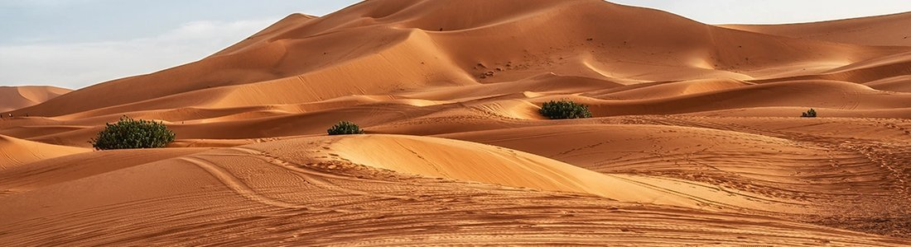
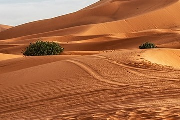

Пустыни
Пустыня - территория с очень малым количеством осадков (обычно менее 250 мм в год) и скудной растительностью. Пустыни бывают не только жаркими: крупнейшая из них по площади - Антарктида, около 14 млн км². Самая большая жаркая пустыня - Сахара в Северной Африке, её площадь около 9 млн км². Песок покрывает лишь часть Сахары: значительную долю составляют каменистые плато и равнины. Пустынные ландшафты привлекают туристов дюнами, оазисами и звёздным небом.
Раздел 1: Понятия и списки
Основные понятиянумерованный список
- Бархан - песчаная дюна серповидной формы, которая медленно перемещается под действием ветра.
- Эрг - обширный песчаный массив с дюнами в пустыне.
- Оазис - участок пустыни с источником воды и растительностью.
- Аридный климат - сухой климат, при котором испарение превышает количество осадков.
Организация поездки в пустынюнумерованный список
- Выбрать прохладный сезон: осень, зима или весна
- Ехать с опытным гидом или в составе организованной группы
- Взять запас воды из расчёта на несколько литров в день на человека
- Запастись головным убором, очками и закрытой одеждой
- Учесть холодные ночи и взять тёплую одежду
Особенности пустынного климатамаркированный список
- Резкие перепады температуры между днём и ночью
- Очень мало осадков
- Сильное солнечное излучение
- Ветер формирует дюны и барханы
Крупные пустыни миравложенный список
- Африка
- Сахара - около 9 млн км²
- Калахари и Намиб на юге континента
- Азия
- Гоби - Монголия и Китай, около 1,3 млн км²
- Каракумы - Туркмения
- Аравийская пустыня
- Америка
- Атакама - Чили
- Сонора - США и Мексика
- Полярные пустыни
- Антарктида - около 14 млн км²
Раздел 2: Фотографии

Песчаные дюны. Их форму определяет направление и сила господствующих ветров.

Кустарник на склоне дюны. Растения пустыни приспособлены к недостатку воды: у них глубокие корни и мелкие листья.
Большие фотографии
Нажмите на миниатюру: фотография 600 на 400 пикселей откроется в новой вкладке.
 Открыть крупно Открыть крупно |
 Открыть крупно Открыть крупно |
 Открыть крупно Открыть крупно |
Раздел 3: Таблица фактов
| Фото | Объект | Ключевые данные | Ссылки |
|---|---|---|---|
 | Сахара | Около 9 млн км²; Северная Африка; крупнейшая жаркая пустыня мира | Страница о горах Сахара в Википедии |
| Гоби | Около 1,3 млн км²; Монголия и Китай | Страница о море Гоби в Википедии |
| Каракумы | Занимают около 70% территории Туркмении | Советы путешественнику Каракумы в Википедии |
| Антарктида | Около 14 млн км²; крупнейшая пустыня мира по площади | Главная страница Антарктида в Википедии |